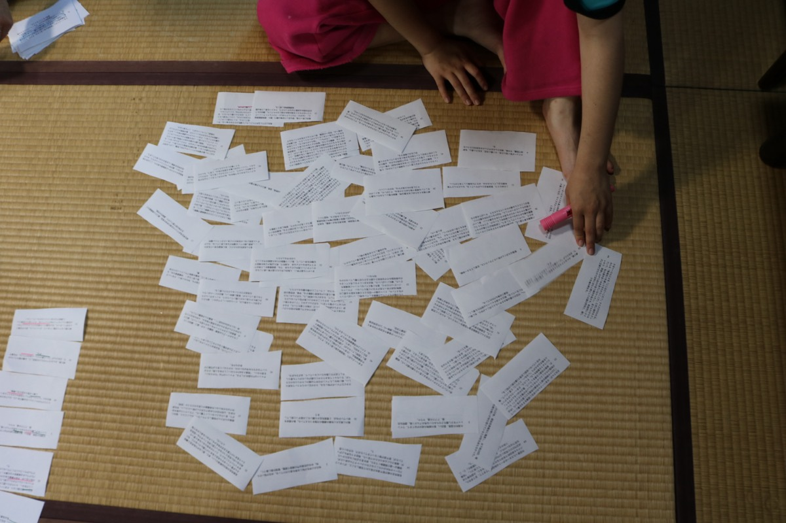
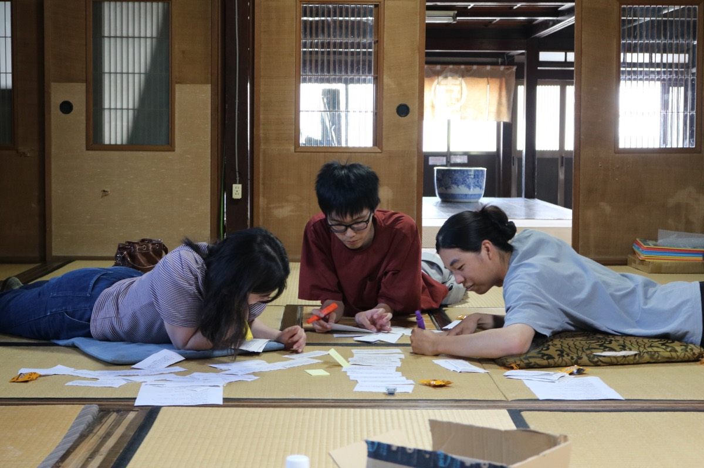
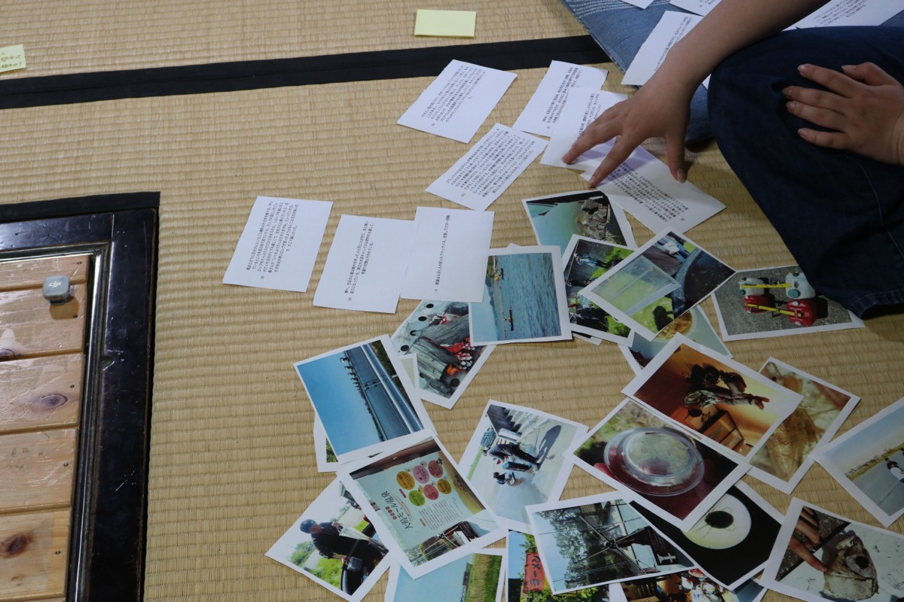
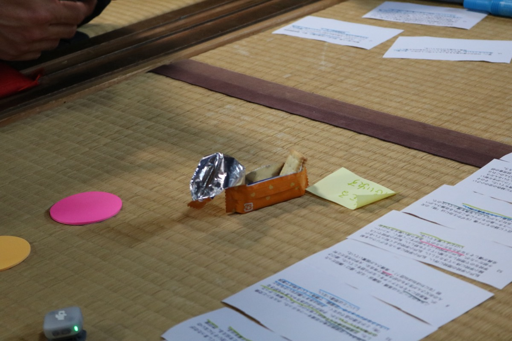
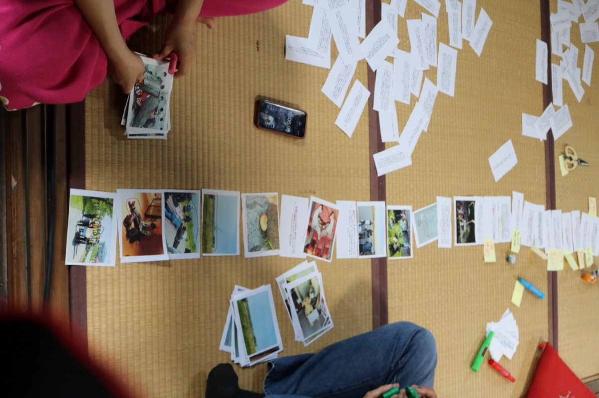
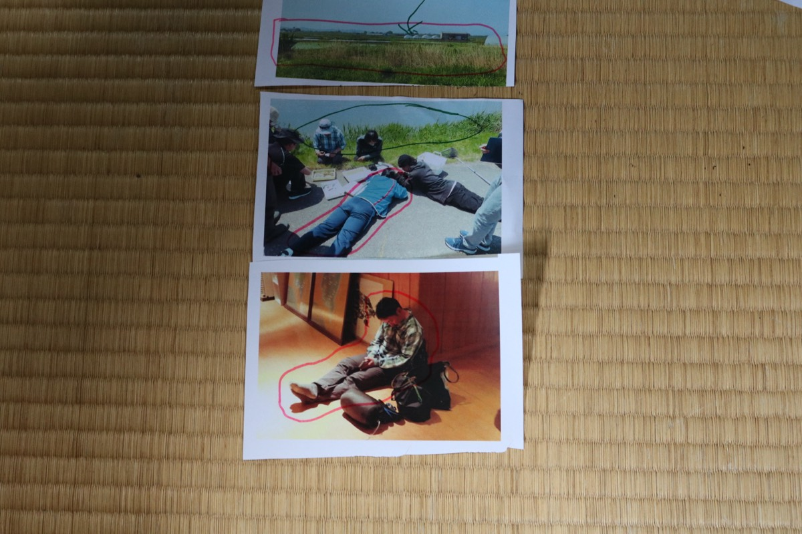

2第1回ワークショップの記録
2026年6月14日、生物調査合宿のフィールドノートを素材にした半日のワークショップを行いました。以下はその記録です。
日付
2026年6月14日（約3.5時間）
会場
旧渡邉幸四郎邸（秋田市・新屋）
素材
八郎湖・生物調査合宿（2026年5月16–17日・はちろうプロジェクト）のフィールドノート
ノートの書き手
5名
当日の参加
7名
方法
v1.0（「方法」の節を参照）
素材となった合宿
はちろうプロジェクトの一泊二日の合宿では、鯉の解剖、顕微鏡でのミジンコの観察、網での水生生物の採集、釣ったブラックバスの調理、カヌー、スケッチなどを行いました。参加者はそれぞれフィールドノートを書きました。観察の内容だけでなく、移動中の会話や食事のこと、その場で思ったことも、そのまま書かれています。
当日行ったこと
まず、ノートをすべてカードに切り分けました。1冊でおよそ60枚になります。二人一組になり、片方が気になるカードを1枚出し、もう片方が「似ている」と感じたカードを自分の手札から出して隣に置いていきます。このとき、カードのどこに注目したかを、それぞれ別の色のペンで線を引いて残します。つながらなくなったら列を区切り、次の列を始めます。


後半では、合宿の写真を切ったカードも混ぜて、同じ作業を続けました。文字だけのときよりも連想が出やすくなりました。最後に、できあがった列を2チームで見せ合い、列の中に繰り返し現れているパターンについて話し合いました。

結果
当日は、大きく2つの列ができました。一方は40枚（テキストと写真をあわせたもの）、もう一方は19枚です。列そのものは「カードの並び」の節に掲載しています。
共有の場では、「何かをしながら話している場面が多い」「名前をつける場面が繰り返し出てくる」「顕微鏡で見るときと歩いて見るときで視点が入れ替わる」といったパターンが確認されました。こうした当日の議論と、その後の書き起こしの整理から、八郎湖との関わり方を表す7の言葉をまとめました。

気づきのハイライト
当日の議論と書き起こしの整理から生まれた、八郎湖との関わり方を表す7つの言葉です。学術的な分類ではなく、その場の観察や会話から出てきた言い回しを書き留めたものです。
1
名付けることで関わる
太ったウシガエルを「ビール腹ガエル」と呼んだ瞬間、それは話題にでき、思い出せる存在になる。生き物のあだ名、子供の名前、ゆるキャラのネーミング。名前は対象を切り分ける道具ではなく、関わりの入り口で、名前の数だけ関わり方が増えていく。
2
ながら話で気づきがこぼれる
顕微鏡を覗きながら、スケッチしながら、口が動く。正面から尋ねると出てこない話が、手と目が対象に向かっているときに限ってこぼれてくる。
3
神の目と虫の目を行き来する
湖岸を歩くとき、自分がどこにいるか地図の位置を想像する。顕微鏡でミジンコを見るとき、ミジンコと同じ世界にいる気がする。八郎湖では、この二つの目が一日のうちに何度も入れ替わる。
4
スケッチする・鳥の声は書きとれない
みんなスケッチをたくさんして記録に残す。しかし鳥の鳴き声は「ピョ、ピピヤァ」と言葉、しかも当て字にしかならず、後で読んでも思い出せない。記録は「見る」に偏り、「聞く」を取りこぼしていく。
5
まっすぐな道、ぐねぐねの航跡
干拓地の道は人間の意志だけで引かれた直線。ボートは波と風と腕の力が噛み合って、まっすぐには進まない。二種類の線が同じ風景に同居している。
6
ところどころに標識
オロナミンCの空き瓶が「ここは釣れる」の目印になり、「現湖岸は急に深くなる」が小学生への標語になる。湖のあちこちに、通う人だけが読める印が置かれている。
7
合わないものの異国感
ビールにマシュマロは合わない。干拓地にぽつんと立つモアイ。なじまないものは、その場所に何が「合う」のかを逆から照らし出す。
3カードの並び
当日できた2つの列を、記録写真から書き起こして掲載します。各カードの本文、線が引かれた箇所、前のカードとのつながりについての説明を、並んだ順に載せています。
※記録写真からの書き起こしのため、一部の接続の解釈と線の色は推定を含みます（該当箇所に「※推定」と付記）。カード番号の重複は、両チームで同じカードが参照された可能性があります。


チームA ― 名付けから食われるまで（40枚）
名付け、異物感、初めての経験、生物への接近、食物連鎖が中心に見える列。最終共有では「鯉の頭に大興奮・解剖好き」から「食われる」へ至る連鎖として語られた。
列の初手
カード 3
コイの頭部。盛口くん、大興奮。解剖が好き。
「大興奮」→「ハイテンション」― 強い感情・テンションの高さで接続。
カード 9
帰り際、すぐ近くに謎のモアイ像（なぜか土台には「萌」の文字）があり、イースター島のモアイにあこがれる佐藤さんがハイテンションに。五社さんがたくさん写真を撮っていたので、私は自粛したため写真が無い。
「モアイ／イースター島」→「行きたい国」― 海外・異国への想像で接続。
カード 65
行きたい国の話になり、かまへーさんは「タイや台湾に行ったことがあるし、もう行きたい国とかは特にない」と言う。私はチリとモンゴルに行きたいと話した。そしたら、かまへーさんの知り合いが、子供や障害のある方が技術を身につけるようなプログラムを企画運営する仕事をしていて、今やっているプログラムがモンゴルに行くプランなんだという話を教えてくれた。
「行きたい国」→「大潟村の温泉、面白い」― 場所性・異国感・面白さで接続。
カード 5
大潟村の温泉、面白い。昔の植物の成分が出てきて、ワインレッドを少し酸化させたみたいな色のアルカリ泉。透明な白湯、アブクの湯、サウナ。
「面白い」→「名前なんだろう？」― 面白さが、名前への疑問に移る。
カード 40
ヒツジグサがたくさんいる水槽があった。なんで水の中の生き物なのに「ヒツジ」グサという名前なんだろう？かまへーさんに聞くが答えを知らない模様。
「名前」→「名付けていた」― 名前への疑問から、実際に名付ける行為へ接続。
カード 58
帰り際、みんなでアマガエルを発見した。お腹が膨れていたので、五社さんが「ビール腹ガエル」と名付けていた。不名誉すぎる。
「名付け」→「共通言語」― 名前・記号・目印が、仲間内の共有言語へ広がる。
カード 47
ナミンCの空き瓶が刺さっている。これはバス釣りをする人たちがつけた目印らしい。「ここはバスが釣れる場所ですよ」というのを意味するマークだそう。これを聞いて私は最初、バス釣りをする人が自分のためにつけたマークだと思ったが、これは釣りをする人たちの間の共通する行動だとすると、共通言語のようなもの、仲間のようなものに見えてくる。共通言語とは他者と同じ認識・思いやりなどが含まれているはず。
「バス釣り」→「ブラックバス」― バス釣りの目印から、実際のブラックバスへ接続。
カード 6
朝食は斗沢くんが釣ったブラックバス。支度してカヌーへ。
「支度」→「急いで荷物をまとめる」― 出発前の支度という行動で接続。
カード 36
朝、急いで荷物をまとめる。昨日何もせずに寝てしまったのがよくなかったと後悔。集合時間の8:30に間に合いそうにないので、かまへーさんにLINEで数分遅れることを伝える。昨日喧嘩した父に行ってきますと言って家を出る。
「家を出る」→「食／豆腐鍋」― 家庭・食事・選ばれ方の話へ展開している可能性。※推定
カード 51
五社さんに豆腐鍋定食の豆腐を一つもらった。豆腐鍋定食なんて初めて見たけど、すごく美味しかった。この鍋がないというか、子供からおばあちゃんまで大好きな「肉」とか王道の品ではなく、子供はあまり選ばないかもねというようなポジションの「豆腐鍋」で勝負している時点で美味しいことは間違いない。
「選ばない／好き」→「生きもの好き界隈」― 好み・界隈・真面目さへの連想として接続している可能性。※推定
カード 8
こちらのテーブルは高橋・伽羅谷・斗沢・盛口・鎌田だったが、真面目にメモやスケッチをしながら話をしていた。盛口さんのお父さんが生きもの好き界隈で有名な、大学の先生だと判明（なにわほねほね団？）。高橋さんが超驚いていた。
「界隈で有名／覚えている」→「よく覚えている」― 記憶のされ方・主観的な覚え方で接続。
カード 52
払戸小学校の閉校に伴い、払戸小学校にあったモグリウムを船越小学校に持ってきたらしい。払戸小学校はよく知っている小学校なので閉校したと聞いてとても悲しい。私は小学校でバスケ部だったが、払戸小学校はバスケ部がすごく弱く、メンバー全員が優しそうな子たちだったので、あまり良い覚え方ではないけどよく覚えている。
「覚えている」→「名推理で感動する」― 記憶・認識から推理・納得へ接続している可能性。※推定
カード 57
そのあとザリガニ池にいく。途中で木の下に緑色の空の小さい卵（うずらの卵のようなサイズ）が割れて落ちていた。そのそばにはフンが落ちており、斗沢さんによると「フンがまだ乾いていないので、おそらくこの木の上に鳥が住んでいるんだろう」と言っていて、なるほどなと納得した。斗沢さんのこれらの証拠から導いた答えが名推理で感動する。
「気づく／推理」→「気づく」― 観察して気づくことの連鎖。
カード 19
16時頃。温泉。盛口さんの髪が意外と長いことに気づく。
「気づく」→「気づく／手には馴染む」― 身体で触れて気づくことへ展開。
カード 64
今回使ったカヌーのボートは秋田杉でできていて、全て手作り。パドルも秋田杉で手作りなので、触ってみると、大部均等ではほぼ円だけど完全に正円の円柱ではないことに気づく。「均等な形ではないけれど、そのほうが人間の手には馴染む」と、ニツ井のカヌー体験をやっている方は言う。
「人間の手には馴染む」→「手が動く／特徴がはっきりわかってくる」― 手の働き・身体化された観察で接続。
カード 62
盛口くんはスケッチをしていた。私はあまりスケッチをしないので、こんなにたくさん手が動くなんてすごいなと思う。斗沢さん曰く「生物観察においてスケッチはとても重要なのだ」と言う。確かに、顕微鏡の写真を撮ることはできるが、スケッチすることでその生物の特徴がはっきりわかってくるような気がする。
「手が動く」→「触って遊んでいた／家を破壊」― 手を動かす観察から、触って壊してしまう行為へ接続。
カード 25
蜘蛛の巣があって、主がいない物だと思って触って遊んでいたら持ち主の蜘蛛がいたので、家を破壊してごめん〜〜と思った。
「家を破壊」→「圧死しないタイプ」― 生き物を壊す／壊さない、扱い方の倫理で接続。
カード 61
今日モグリウムで採取してきたミジンコたちを顕微鏡で観察した。ミジンコ下敷きで答え合わせをしながら観察していく。今回はミジンコを潰すタイプのプレパラートではなく、真ん中の部分が窪んでいて生き物が圧死しないタイプのプレパラートにした。そしたら、ミジンコたちがすごい動き回っていて、こう言う速さで、動きで動くんだなと感動した。普段は潰すタイプのプレパラートだったので、動き回っているところをあまり見たことがなかった。
「見たことがなかった」→「実物にあえて感動する」― 見たことがなかったものを実際に見る感動で接続。
カード 38
車に乗って、ついついかまへーさんや五社さんと話してしまったが、初対面の盛口くんと互いに自己紹介する。粘菌研究クラブの活動記録写真でよく見かけるので、実物にあえて感動する。
「初対面／実物にあえて感動」→「人生初ビール」― 初めて会う・初めて経験することへの接続。
カード 60
人生初ビールを飲んだ。ビールはおいしさではなく、疲れたときに飲むから良いのだと聞いていたので、すごくまずいんだろうなと思っていたが、普通に美味しい。最近のビールはいろんな改良がされているんだろうと感じる。
「ビール」→「バーベキュー／食事」― ビールから夜の食事・バーベキューへ接続。
写真カード
📷 夜のバーベキューで、網の上の食材を複数人が串で焼いている写真。
「異物感」→「本物ではないモアイ像」― 食事写真の異物感から、場違いなモアイ像へ接続した可能性。
カード 55
モアイ像が置いてある。昔、学生が作ったらしい。小さいモアイ像が乗っている台の部分に「萌」と刻まれている。文体はゆるい感じ。四方から写真を撮り、五社さんにツーショットを撮ってもらう。日本には、本物のモアイ像もあるが、本物ではないモアイ像も各地に存在しており、また「モアイ」がつく名前のお店もある。「日本人にとってのモアイ像」について調べたくなった。
「萌／名前」→「萌／名前のまとまり」― モアイ台座の文字と、生物名の書き込みを接続。
写真カード
📷 紙にミジンコなどの名前が書かれ、赤い線で囲まれている写真。下に緑色で「萌」の書き込み。
「生物名」→「採集・観察する人々」― 生き物の名前から、生き物に関わる人々へ接続。
写真カード
📷 草地で複数人が採集・観察をしている写真。赤線で人物群が囲まれている。
「採集する人々」→「立っている人々」― 人の種類・立ち振る舞いへの連想。※推定
写真カード
📷 屋外で複数人が立って作業している写真。赤線で空や人物周辺が囲まれている。
「屋外の場」→「鳥の声」― 屋外の写真から、音・鳥の声の記録へ移る。
カード 24
鳥の声が聞こえる。鳥の鳴き声はすごくいい当てが妙で、当て字できないし文字にもできない。なんかノートにはピョ、ピピヤァと書かれているよ。でも、その文字を聞いても私はその声をもう思い出せないし、この字を書いたときもいや、違うなあと思った。
「鳥の声」→「鳥が食べた魚の骨」― 鳥の存在から、鳥が食べた魚の骨へ接続。
写真カード
📷 手の上に魚の顎骨のような白い骨が乗っている写真。赤線で骨が囲まれている。
「骨／魚」→「水を蹴る／ヤゴ」― 生き物の身体・水辺の採集行為へ接続。※推定
カード 28
網で捕まえるために水を蹴る時、爆弾を落としたみたいな暴力をしている感覚で後ろめたさがある。ヤゴがいた。糸トンボのヤゴと言われた気がする。形がかっこいい。
「暴力／後ろめたさ」→「食べ物が落ちている」― 食べられるもの・食われるものへの連想として暫定記録。※推定
写真カード
📷 地面に落ちたパンまたは食べ物のようなもの。黒と赤の線で囲まれている。
「落ちた食べ物」→「整備された自然／風景」― 個別の食べ物から、場所・風景へ視点が移る。※推定
写真カード
📷 水辺・草地・遠景の写真。赤線で横長に囲まれ、黒い矢印が描かれている。
「風景」→「寝そべって見る」― 風景を眺めるのではなく、身体を低くして観察する態度へ接続。
写真カード
📷 水辺で人が寝そべるように観察している写真。赤線で人の身体が囲まれている。
「寝そべる身体」→「座り込む身体」― 身体姿勢の類似で接続。
写真カード
📷 屋内で床に座り込んでいる人物の写真。赤線で身体が囲まれている。
「身体」→「カヌーを持つ身体」― 身体の姿勢・使い方で接続。
写真カード
📷 複数人がカヌーを持って歩いている写真。赤線で集団が囲まれている。
「カヌー／移動」→「モグリウムへ」― 移動・現場へ向かう流れで接続。
カード 10
続いて、生態系公園のモグリウムへ。去年追加設置した水槽には、イトモ・センニンモに加えて、トリゲモの新芽らしきものが生えていた！うたせ館のバケツで育ててもなかなか増えなかったので、これは嬉しい。追加水槽は水がきれいだが、もう一つの水槽は濁っていてほとんど中が見えない。水草の生育もイマイチで、今後が悩ましい。
「生えていた／嬉しい」→「植物・燃える素材」― 植物由来のもの、使われ方への連想。※推定
写真カード
📷 木炭または松ぼっくり・燃料のようなものの写真。緑の手書きで「杉」と読める。
「燃える／食事の場」→「カツ重」― 火・食事への接続、または名前への再接続。※推定
カード 4
メニューが多く悩んだ末、カツ重に決定。五社さん／高山さんは私好みで談義。その後、津田さんのお子さんのお名前何だろうになる。
「お子さんのお名前」→「朝日」― 津田さんの子の名前「朝日」と写真の朝日の語で接続。
写真カード
📷 水面または湖面の写真。手書きで「朝日」と書かれている。
「朝日」→「光に集まる」― 朝日・光から、光に集まるミジンコへ接続。
カード 42
モグリウムをみんなで眺める。私がのぞいてるところは光が当たる場所だったので、ミジンコたちがよく見える。斗沢さんによると「ミジンコは光に集まる習性がある」と言う。なんでだろう？暖かいからだろうか？
「ミジンコ」→「容器内の小さな対象」― ミジンコ・水中の小さなものを視覚的に接続。
写真カード
📷 透明な容器の中に小さな生物または水があり、赤丸で小さな対象が囲まれている写真。
「小さな生物」→「食べ物」― 食物連鎖・食われるオチへの接続として暫定記録。
写真カード（列の最後）
📷 皿または鍋の中の食べ物の写真。黒線で食べ物が囲まれている。
チームB ― ながら話・帰属・記録方法（19枚）
人の行動、帰属する場所、昔と今、視点の入れ替わり、記録方法へ展開する列。最終共有では、人の立ち振る舞いから帰属・断絶／継続・視点・記録方法へ向かう連鎖として語られた。
列の初手
カード 28
網で捕まえるために水を蹴る時、爆弾を落としたみたいな暴力をしている感覚で後ろめたさがある。ヤゴがいた。糸トンボのヤゴと言われた気がする。形がかっこいい。
「暴力／後ろめたさ」→「外来種食が人気」― 生き物への暴力性・後ろめたさと、外来種を食べてしまうことへの違和感で接続。
カード 13
朝食は斗沢さんが用意したブラックバスのムニエルと、塩おにぎり。思った以上においしくて驚いた。ブラックバスは草木谷のある、山田付近のため池で斗沢さんが釣ったらしい。学生部内ではなぜあんなに外来種食が人気なのだろうか（苦笑）。
「外来種食が人気」→「喧嘩した父に行ってきます」― 良い／悪いで割り切れないが自分には大事なもの、という接続。
カード 36
朝、急いで荷物をまとめる。昨日何もせずに寝てしまったのがよくなかったと後悔。集合時間の8:30に間に合いそうにないので、かまへーさんにLINEで数分遅れることを伝える。昨日喧嘩した父に行ってきますと言って家を出る。
「父／家を出る」→「家を破壊」― 家・帰属する場所の象徴性で接続。
カード 25
蜘蛛の巣があって、主がいない物だと思って触って遊んでいたら持ち主の蜘蛛がいたので、家を破壊してごめん〜〜と思った。
「触って遊んでいた／家を破壊」→「悪ガキ／覗き込みながら」― 気になるものに手当たり次第触る悪ガキ的行動から、覗き込みながら会話する行動へ接続。
カード 53
五社さんが、かまへーさんの小学生に授業をする仕事について「コロナの時期を経て子供達の性格などに変化があった（外出が制限されたことによりおとなしい子が増えたとか？）」らしいが、実際子供達と仕事をしていて、悪ガキはいろんなですか？というような質問をした。そしたら、かまへーさんがモグリウムを覗き込みながら「いるねー、ミツヅコ」と言っていて、噛み合っていない会話に合宿で1番の笑いが起こる。
「覗き込みながら」→「メモやスケッチをしながら話」― 何かをしながら話す、という「ながら話」へ接続。
カード 8
こちらのテーブルは高橋・伽羅谷・斗沢・盛口・鎌田だったが、真面目にメモやスケッチをしながら話をしていた。盛口さんのお父さんが生きもの好き界隈で有名な、大学の先生だと判明（なにわほねほね団？）。高橋さんが超驚いていた。
「生きもの好き界隈／覚え」→「よく覚えている」― 人や場所の主観的な覚え方で接続。
カード 52
払戸小学校の閉校に伴い、払戸小学校にあったモグリウムを船越小学校に持ってきたらしい。払戸小学校はよく知っている小学校なので閉校したと聞いてとても悲しい。私は小学校でバスケ部だったが、払戸小学校はバスケ部がすごく弱く、メンバー全員が優しそうな子たちだったので、あまり良い覚え方ではないけどよく覚えている。
「閉校／持ってきた」→「閉園間近／すっからかん」― 場所の閉鎖、移転、失われた場所で接続。
カード 56
生態系公園は2年前の閉園間近にもて以来だ。温室のなかがすっからかんになっていて少し寂しい気持ちになった。すごくいい空間なので何か活用できないかなと思う。かまへーさんは以前この建物の中でWSだかレクチャーだかを行ったと言っていた。
「以前この建物の中で」→「前はNGOに所属していた」― 過去の活動・以前の所属で接続。
カード 16
9時半。名取先生の車で現湖岸、植生再生地点へ移動。名取先生の車の中で先生が、自分は広い意味で環境が専門で現地調査が得意で前はNGOに所属していたことを明かす。地図でどこに来ているかわからない。
「地図でどこに来ているかわからない」→「顕微鏡で観察」― 地表の視点と、顕微鏡での神の視点の対比で接続。
カード 61
今日モグリウムで採取してきたミジンコたちを顕微鏡で観察した。ミジンコ下敷きで答え合わせをしながら観察していく。今回はミジンコを潰すタイプのプレパラートではなく、真ん中の部分が窪んでいて生き物が圧死しないタイプのプレパラートにした。そしたら、ミジンコたちがすごい動き回っていて、こう言う速さで、動きで動くんだなと感動した。普段は潰すタイプのプレパラートだったので、動き回っているところをあまり見たことがなかった。
「視点」→「人為的に作られた道／鳥の道路」― 人間の視点と非人間の視点の入れ替わり。
カード 21
まっすぐな道が多い。人為的に作られた道が真っ直ぐにのっすっと入り込むかたち。でも、道路整備をしたらそうなるほかないなあ。大潟村で、例えば鳥が土地を開拓する権利を持っていて、鳥という種族のための道路を作るとしたら何を作るんだろう。
「まっすぐな道」→「完全に正円ではない／手には馴染む」― 直線・均質さと、手に馴染む不均質さの対比。
カード 64
今回使ったカヌーのボートは秋田杉でできていて、全て手作り。パドルも秋田杉で手作りなので、触ってみると、大部均等ではほぼ円だけど完全に正円の円柱ではないことに気づく。「均等な形ではないけれど、そのほうが人間の手には馴染む」と、ニツ井のカヌー体験をやっている方は言う。
「手作り／形」→「景色／形」― 人工物の形と風景の見え方で接続。※推定
カード 48
鏡のような穏やかな水面に、そだ小破堤が連なっている。その奥には湖と山々がみえる。この景色の浮世絵がありそうだと思った。それくらいすごく胸に残るものがある。
「景色」→「現湖岸」― 風景としての湖岸から、危険を記録するキーワードへ接続。
カード 46
また、「現湖岸は急に深くなる」というのは、ただ生態系を知る上で大切なキーワードなのではない。これはかまへーさんが、八郎湖の見学に来る小学生たちに一番メモをとってもらっているキーワードなのだそう。現湖岸は急に深くなって危険なので、現湖岸に入らないように教えているのだ。
「メモをとる／キーワード」→「活動記録写真」― 記録のされ方・記録写真へ接続。
カード 38
車に乗って、ついついかまへーさんや五社さんと話してしまったが、初対面の盛口くんと互いに自己紹介する。粘菌研究クラブの活動記録写真でよく見かけるので、実物にあえて感動する。
「活動記録写真」→「写真／スケッチ」― 写真とスケッチという記録方法の違いへ接続。
カード 62
盛口くんはスケッチをしていた。私はあまりスケッチをしないので、こんなにたくさん手が動くなんてすごいなと思う。斗沢さん曰く「生物観察においてスケッチはとても重要なのだ」と言う。確かに、顕微鏡の写真を撮ることはできるが、スケッチすることでその生物の特徴がはっきりわかってくるような気がする。
「記録方法」→「文字にもできない／思い出せない」― スケッチ・写真・文字・音声記録の限界へ接続。
カード 24
鳥の声が聞こえる。鳥の鳴き声はすごくいい当てが妙で、当て字できないし文字にもできない。なんかノートにはピョ、ピピヤァと書かれているよ。でも、その文字を聞いても私はその声をもう思い出せないし、この字を書いたときもいや、違うなあと思った。
「思い出せない／残らない」→「新芽らしきものが生えていた」― 見えるもの・残るものへの復帰、または観察対象の発見で接続している可能性。※推定
カード 10
続いて、生態系公園のモグリウムへ。去年追加設置した水槽には、イトモ・センニンモに加えて、トリゲモの新芽らしきものが生えていた！うたせ館のバケツで育ててもなかなか増えなかったので、これは嬉しい。追加水槽は水がきれいだが、もう一つの水槽は濁っていてほとんど中が見えない。水草の生育もイマイチで、今後が悩ましい。
「水槽／生育」→「現湖岸／餌場」― 水中の生育環境から、現湖岸の生物環境へ接続。（この列の最後）
カード 45
かまへーさん曰く「現湖岸は急に深くなる」そうだ。ミジンコや浮葉植物は、かまへーさんが湖に入りながら自分の体を指差して説明してくれたが、人間の膝から腰くらいまでの高さに住むことを好む。つまり、その高さのエリアが広い現湖岸では、ミジンコや浮葉植物がおらず、今はブラックバスたちの餌場になっているそうだ。
4方法 ― メソッド v1.0
フィールドノートを書くことは、文化人類学の基本的な方法です。その場に加わりながら、同時に少し距離をとって観察する。何が重要かをあらかじめ決めずに、体験を文章にする。人類学の調査では、こうして書きためたノートを、半年から一年ほどかけて少しずつ切り分け、どことどこがつながるかを探していきます。このワークショップは、その作業を一日に縮めて行うものです。
01
切る
一続きのノートのままでは並べ替えられないため、まずカードに切り分けます。
02
つなぐ
二人一組で、似ていると感じるカードを交互に出し、注目した箇所に線を引きながら列をつくります。
03
名前をつける
できた列を見て、そこに繰り返し現れているパターンに名前をつけ、付箋に書き留めます。
基準
このワークショップには、いくつかの決まりごとがあります。
素材の限定
ノートに書かれたことだけを使います。記憶や、すでに持っている考えを持ち込むと、頭の中にある結論をなぞることになるためです。書かれた断片どうしのつながりから、予想していなかった発見を探します。
つなぎ方
種類ではなく、動作でつなぎます。「魚の話」「食べ物の話」でまとめると、分類ができるだけで、八郎湖で人が何をしているのかは見えてきません。「覗き込む」「名前をつける」「壊す」といった動作でつなぐと、行動のパターンが浮かび上がります。
粒度
手がかりは動詞くらいの大きさを目安にします。固有名詞は他のカードとつながりにくく、大きな概念からは当たり前の話しか出てきません。その中間にある動作の言葉から始めます。
写真の併用
文字どうしのつながりが行き詰まったとき、写真は別の種類の連想を開きます。
枠組み
人間中心か、自然中心か、といった出来合いの枠組みには当てはめません。一対一のやりとりの中から、この場所の記録からしか出てこない言葉を見つけることを目指しています。
版の管理
この方法は版として管理し、回ごとの記録と申し送りをもとに改訂していきます。今回の版はv1.0です。
5連絡先
このプロジェクトについてのお問い合わせは、下記までお願いします。
運営：Three from Two｜調査事務所・NPO法人はちろうプロジェクト
お問い合わせ窓口：Three from Two
tsuda@3from2.com